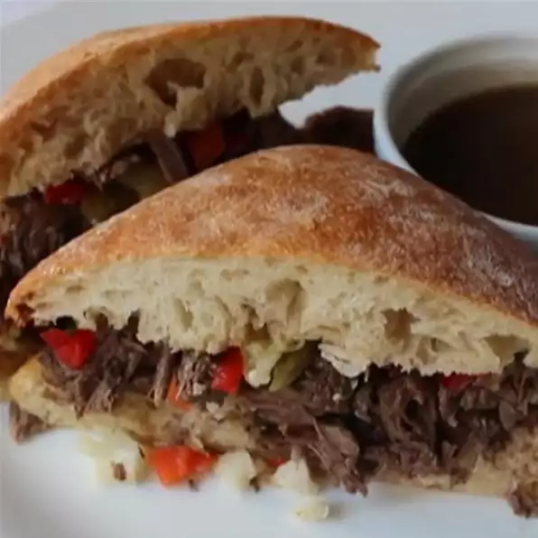

An easy way to make Chicago-Inspired Italian Beef Sandwich

Ingredients
680 grams of boneless beef, cut into 2-inch pieces.
Salt and ground black pepper to taste.
1 tablespoon of vegetable oil.
6 cloves of sliced garlic.
2 tablespoons of white vinegar.
1 tablespoon of ired oregano.
3/2 tablespoons of salt.
1 teaspoon of dried thyme.
1 teaspoon of dried rosemary.
1 teaspoon of ground black pepper.
1 bay leaf.
1/4 teaspoon of red pepper flakes.
2 tablespoons of white vinegar.
3 cups of chicken broth.
4 ciabatta rolls, sliced in half.
1 cup of chopped giardinera.
2 teaspoons of fresh chopped parsley.
Steps
Season beef with a pinch of salt and black pepper. Heat vegetable oil in a heavy pot over
high heat. Cook and stir beef in hot oil until browned, 5 to 8 minutes.
Stir garlic, vinegar, oregano, 1 1/2 teaspoons salt, thyme, rosemary, 1 teaspoon black
pepper, bay leaf, and red pepper flakes into beef. Pour enough chicken broth into beef
mixture to cover the meat by 1 inch and bring to a simmer.
Cover pot with a lid, reduce heat to low, and simmer until meat is fork-tender, 1 to 1 1/2
hours.
Transfer meat with a strainer or slotted spoon to a separate pot; pour about 1/4 cup of meat
broth into pot. Use a wooden spoon to gently break meat into smaller chunks. Cover pot with
a lid or aluminum foil and keep warm.
Skim excess grease from top of broth remaining in the first pot; season with salt and pepper
to taste. Cover pot with a lid or aluminum foil and keep broth warm.
Lay halves of a roll out on a work surface and spoon 2 to 3 tablespoons meat broth over each
half. Top bottom half of roll with a generous portion of meat and a spoonful of pickled
vegetables. Place tops on sandwich. Repeat with remaining buns, broth, meat, and pickled
vegetables to make 3 more sandwiches.
Spoon hot meat broth into ramekins and top each ramekin with 1/2 teaspoon parsley. Serve
sandwiches with hot broth for dipping.